SocioMap
Supports social-science category systems such as ethnicities, languages, religions, and administrative units.
Open SocioMap
ProjectCatMapper
Start Here
CatMapper organizes and harmonizes category systems across datasets. It includes two web applications: SocioMap (social-science categories) and ArchaMap (archaeological categories), plus a public API and official wrapper packages for R (CatMapR) and Python (CatMapPy).
Supports social-science category systems such as ethnicities, languages, religions, and administrative units.
Open SocioMapSupports archaeological category systems including artifact classes, site types, and period taxonomies.
Open ArchaMapBase URL: https://api.catmapper.org
Interactive API docs and endpoint reference.
Open API Docs/search/CMID/{database}/{cmid}/dataset/allDatasets
CatMapR is the official R wrapper for the CatMapper API.
install.packages("remotes")
remotes::install_github("ProjectCatMapper/CatMapR")CatMapPy is the Python port of the CatMapper API wrapper package from CatMapR.
git clone https://github.com/ProjectCatMapper/CatMapPy.git
cd CatMapPy
pip install -e .from catmappy import list_datasets, search_database
datasets = list_datasets("SocioMap")
hits = search_database(database="SocioMap", domain="ETHNICITY", term="Dan")Environment variables (intentionally shared with CatMapR for API compatibility): CATMAPR_API_URL, CATMAPR_API_KEY.
If you use CatMapper in a research project, please cite:
Hruschka, Daniel J., Robert Bischoff, Matt Peeples, Sharon Hsiao, and Mohamed Sarwat.
2022. CatMapper: A User-Friendly Tool for Integrating Data across Complex Categories. SocArXiv Papers.
https://osf.io/preprints/socarxiv/n6rty/
For external datasets used through CatMapper, please cite the original dataset sources shown in their dataset metadata pages. See the CatMapper citation page for updates: catmapper.org/citation.
ProjectCatMapper is maintained by contributors across CatMapper repositories.
Issues and pull requests are welcome.
See CONTRIBUTING.md for workflow details and setup links.
This repository uses the same license model as its GitHub-hosted source. See LICENSE.
Privacy and data handling guidance follows CatMapper documentation on catmapper.org.
API and package stability expectations are documented in project repositories, including CatMapR API stability contracts.
Questions, requests, and collaboration inquiries: support@catmapper.org